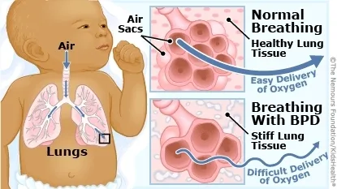
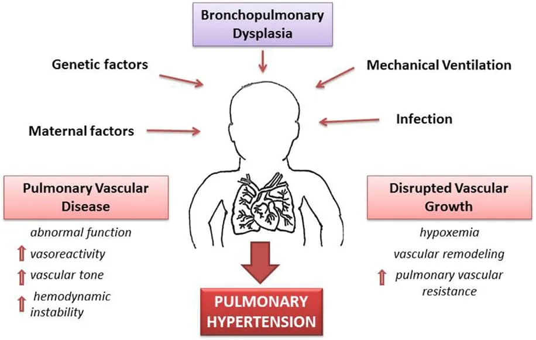
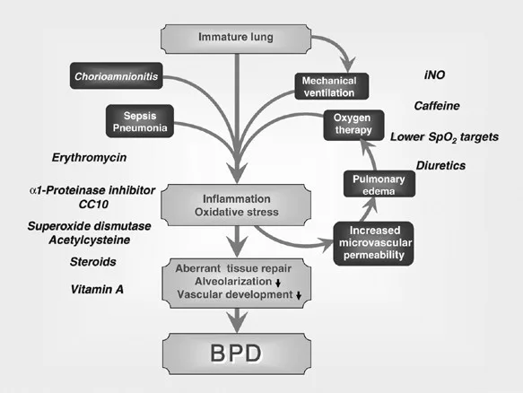
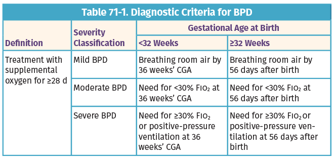

Expanded Nursing Uganda Explanation
Broncho pulmonary dysplasia/ chronic lung disease should be understood beyond a short definition. Link the concept to patient history, focused assessment, common risks, nursing priorities, documentation and evaluation of outcomes.
01 Overview
Bronchopulmonary Dysplasia (BPD) is a chronic lung disease that affects premature infants who have received prolonged respiratory support, usually mechanical ventilation and oxygen, for conditions like Respiratory Distress Syndrome (RDS).
- Broncho Pulmonary Dysplasia (BPD) is also known as
- Chronic lung disease of premature babies
- Chronic lung disease of infancy
- Neonatal chronic lung disease
- Respiratory insufficiency
Bronchopulmonary dysplasia (BPD) is a persistent or prolonged respiratory disease characterized by irregular and scattered parenchymal densities or consolidated lungs.
The most commonly used diagnostic criteria for BPD involve:
- Gestational age at birth: BPD almost exclusively affects premature infants.
- Need for respiratory support: History of mechanical ventilation and/or supplemental oxygen.
- Oxygen requirement: Requirement for supplemental oxygen (FiO2 > 0.21) for at least 28 days of life.
- Severity assessment: Often assessed at 36 weeks Postmenstrual Age (PMA) or at discharge, based on the need for oxygen and/or respiratory support.
The risk factors for BPD can be broadly categorized into factors related to prematurity, factors related to postnatal injury, and genetic predispositions.
- Low Gestational Age: This is by far the most significant risk factor. The earlier an infant is born, the greater the risk of BPD. Infants born at <28-30 weeks gestation are at the highest risk because their lungs are in a critical stage of development (saccular and alveolar stages) where injury can lead to abnormal development rather than repair.
- Low Birth Weight (LBW) / Very Low Birth Weight (VLBW) / Extremely Low Birth Weight (ELBW): Directly correlated with gestational age, smaller infants have more immature lungs and are thus at higher risk.
- Oxygen Toxicity: High concentrations of oxygen (hyperoxia) generate reactive oxygen species (free radicals) that can damage developing lung cells, impairing alveolarization and vascular development, and promoting inflammation.
- Ventilator-Induced Lung Injury (VILI): Barotrauma: Injury due to high airway pressures. While less common with modern ventilation strategies, it's still a risk.
- Volutrauma: Injury due to large tidal volumes (overdistension of lung units). This is a primary concern even with lower pressures.
- Atelectrauma: Injury from repeated collapse and re-expansion of alveoli. This can be mitigated by sufficient PEEP (Positive End-Expiratory Pressure).
- Biocrespiratory Trauma: The release of inflammatory mediators from injured lung cells, which can cause systemic inflammation.
- Context: While essential for survival, mechanical ventilation itself can injure the immature lung, interfering with its normal development.
- Infection/Inflammation: Inflammatory mediators (cytokines, chemokines) released during infection or sterile inflammation can directly damage lung tissue and disrupt lung development. Chorioamnionitis: Maternal intrauterine infection and inflammation is a significant prenatal risk factor, as it can sensitize the fetal lung to postnatal injury.
- Postnatal Sepsis: Systemic infection in the neonate can exacerbate lung injury and inflammation.
- Ureaplasma: Specific infections like Ureaplasma urealyticum are strongly associated with an increased risk of BPD.
- Patent Ductus Arteriosus (PDA): A hemodynamically significant PDA leads to increased pulmonary blood flow and fluid overload in the lungs, exacerbating pulmonary edema and requiring higher respiratory support, thereby increasing the risk of VILI and inflammation.
- Fluid Overload: Excessive fluid administration can worsen pulmonary edema and compromise lung mechanics.
- Nutritional Deficiencies: Poor nutrition can impair lung repair and growth. Premature infants have high metabolic demands.
- Antenatal and Postnatal Steroid Use (Controversial): While antenatal steroids are protective against RDS, postnatal systemic steroids for BPD prevention/treatment are used with caution due to neurodevelopmental concerns, and their role in BPD risk is complex and debated.
- Genetics: Individual genetic predispositions (e.g., polymorphisms in genes related to inflammation, antioxidant defense, or lung development) can influence susceptibility to BPD.
- Male Gender: Male infants tend to have a higher incidence and severity of BPD compared to females.
The pathophysiology of BPD, is now understood as primarily a disorder of arrested lung development rather than just destructive lung injury. It's a complex interplay of the fragile, immature lung encountering an injurious postnatal environment, leading to a deviation from its normal developmental trajectory.
- Pseudoglandular (5-17 weeks): Bronchial tree forms.
- Canalicular (16-26 weeks): Airway lumen widens, capillaries develop near epithelium. Surfactant production begins.
- Saccular (24-38 weeks): Terminal saccules (primitive alveoli) form, increase in number. Type I (gas exchange) and Type II (surfactant production) pneumocytes differentiate. This is the critical period for BPD development.
- Alveolar (>36 weeks to childhood): Massive proliferation of true alveoli.
- Arrested Alveolarization: The immature lung, particularly during the saccular and alveolar stages, is highly vulnerable to injury from oxygen and mechanical ventilation. This injury disrupts the normal processes of septation and formation of new alveoli. Result: Instead of forming numerous small, thin-walled alveoli, the lung develops fewer, larger, and simplified airspaces. This leads to a reduced surface area for gas exchange.
- Dysfunctional Pulmonary Vasculature: The development of the pulmonary capillaries and arteries is also disrupted by the same insults (oxygen toxicity, inflammation). There is a reduction in the number of small pulmonary arteries and capillaries, and the existing vessels may be abnormally structured (dysmorphic). Result: This contributes to increased pulmonary vascular resistance, which can lead to pulmonary hypertension, further impairing gas exchange and potentially straining the right side of the heart.
- Chronic Inflammation and Remodeling: The initial injury (VILI, oxygen, infection) triggers a cascade of inflammatory responses. While less prominent than in "old" BPD, chronic low-grade inflammation persists. This inflammation, along with attempts at repair, can lead to some degree of interstitial fibrosis and smooth muscle hypertrophy, particularly in the airways. Result: This remodeling contributes to abnormal lung mechanics, airway hyperreactivity, and increased airway resistance.
- Oxidative Stress: Hyperoxia and inflammation lead to an imbalance between pro-oxidant (reactive oxygen species) and antioxidant defenses in the developing lung. The immature lung has limited antioxidant capacity, making it highly susceptible to oxidative damage. Result: Oxidative stress contributes to cell death, impaired growth factor signaling, and ultimately, abnormal lung development.
- Impaired Growth Factor Signaling: Various growth factors (e.g., VEGF for vascular development, FGF for epithelial growth) are critical for normal lung maturation. Injury and inflammation can disrupt the production or signaling of these factors. Result: This further contributes to the arrest of alveolarization and angiogenesis.
The clinical presentation of an infant with BPD involves persistent signs of respiratory distress and dependence on respiratory support beyond the acute phase of RDS.
- Tachypnea: Persistently elevated respiratory rate, often subtle in milder cases but more pronounced during activity or stress.
- Increased Work of Breathing (WOB): Retractions: Indrawing of the chest wall (subcostal, intercostal, suprasternal) as the infant works harder to breathe.
- Nasal Flaring: Widening of the nostrils with inspiration.
- Grunting: A compensatory mechanism to maintain functional residual capacity.
- Hypoxemia: Persistent low oxygen saturation (SpO2) requiring supplemental oxygen to maintain target levels.
- Hypercapnia (less common in mild BPD): Elevated carbon dioxide levels in the blood, indicating impaired gas exchange. This may be tolerated (permissive hypercapnia) in some cases.
- Wheezing and Bronchospasm: Due to airway inflammation and hyperreactivity, similar to asthma. May respond to bronchodilators.
- Cough: Can be chronic, especially with activity or infection.
- Increased Secretions: May require frequent suctioning.
- Failure to Thrive (FTT): Infants with BPD often struggle with weight gain and growth due to: Increased Metabolic Demands: The persistent work of breathing and chronic inflammatory state increase caloric requirements.
- Feeding Difficulties: Respiratory distress can interfere with coordination of sucking, swallowing, and breathing. Oral aversion is common due to prolonged intubation and oral tube placement.
- Gastroesophageal Reflux (GER): Common in infants with BPD, which can lead to feeding intolerance, aspiration risk, and further lung irritation.
- Delayed Development: While not a direct lung symptom, the chronic illness, frequent hospitalizations, and associated neurological comorbidities often lead to developmental delays (motor, cognitive, speech).
- Pulmonary Hypertension (PPHN): Can develop secondary to the abnormal pulmonary vasculature, leading to worsening hypoxemia and right heart strain.
- Cor Pulmonale: Right-sided heart failure due to chronic pulmonary hypertension.
- Frequent Hospitalizations: Due to respiratory exacerbations, infections (especially RSV, influenza), and complications.
- Barrel Chest: May develop due to chronic hyperinflation of the lungs.
The diagnosis of BPD is primarily a clinical diagnosis, based on an infant's history of prematurity, need for respiratory support, and the ongoing requirement for supplemental oxygen. The most widely accepted definition comes from the National Institute of Child Health and Human Development (NICHD) and categorizes BPD based on severity at a specific time point.
This definition is applied at 36 weeks Postmenstrual Age (PMA) or at discharge (whichever comes first) for infants born at <32 weeks gestational age . For infants born at ≥32 weeks gestational age , it's assessed at >28 days postnatal age but before 56 days postnatal age or discharge .
- Oxygen Requirement: * Requirement for supplemental oxygen (FiO2 > 0.21) for at least 28 days of postnatal age . This is the foundational criterion for diagnosing BPD.
- Severity Stratification (at 36 weeks PMA or discharge): Mild BPD: Infant requires supplemental oxygen for at least 28 days but is breathing room air (FiO2 ≤ 0.21) at 36 weeks PMA or discharge.
- Moderate BPD: Infant requires supplemental oxygen (FiO2 > 0.21) at 36 weeks PMA or discharge, and FiO2 < 0.30.
- Severe BPD: Infant requires supplemental oxygen (FiO2 ≥ 0.30) and/or positive pressure support (e.g., mechanical ventilation, CPAP, BiPAP) at 36 weeks PMA or discharge.
- Chest Radiography (X-ray): In "new" BPD, the X-ray changes can be subtle. They may show diffuse haziness, mild hyperinflation, small lung volumes (due to arrested growth), and sometimes linear opacities. Less commonly, fine reticular patterns or cystic changes. Purpose: To assess lung parenchyma, rule out other causes of respiratory distress (e.g., pneumonia, congenital anomalies), and monitor progress.
- Arterial Blood Gas (ABG) or Capillary Blood Gas (CBG): May show persistent hypoxemia, sometimes with compensated respiratory acidosis (elevated PaCO2, normal pH) in more severe cases. Purpose: To assess gas exchange efficiency and guide respiratory support.
- Echocardiogram: Purpose: To evaluate for: Hemodynamically significant PDA.
- Pulmonary hypertension (estimated RV systolic pressure, tricuspid regurgitation jet velocity).
- Right ventricular hypertrophy or dysfunction (cor pulmonale).
- Pulmonary Function Tests (PFTs): Not routinely performed in acutely ill infants but can be useful in older infants and children with BPD to assess lung mechanics (e.g., airway obstruction, compliance) and guide therapy.
There is no specific cure for BPD , but treatment focuses on minimizing further lung damage and providing support for the infant’s lungs, allowing them to heal and grow. Newborns suffering from BPD are frequently treated in a hospital setting, usually a Neonatal Intensive Care Unit (NICU), where they can be continuously monitored and receive specialized care.
The medical management focusing on supportive care, optimizing respiratory function, preventing complications, promoting growth, and facilitating neurodevelopment. The ultimate goal is to minimize lung injury while supporting lung healing and growth.
The cornerstone of BPD management is optimizing respiratory support while minimizing iatrogenic lung injury.
- Oxygen Therapy: Goal: Maintain adequate oxygenation (target SpO2 typically 90-95% or as per individual protocol) while carefully minimizing hyperoxia, which can exacerbate lung injury.
- Delivery: Can be delivered via nasal cannula (low flow or high flow), CPAP, BiPAP, or mechanical ventilation.
- Weaning: Gradual weaning of oxygen is crucial, with careful monitoring for hypoxemia, especially during sleep, feeding, or illness. Oxygen challenges (brief removal of oxygen) may be used to assess readiness for weaning.
- Respiratory Support Modalities: Surfactant Replacement with Oxygen Supplementation: While surfactant is primarily for acute RDS, it plays a role in preventing the initial lung injury that can lead to BPD. Providing oxygen supplementation alongside surfactant is essential to stabilize the infant.
- Continuous Positive Airway Pressure (CPAP): Non-invasive support that delivers continuous positive pressure to keep airways open and improve lung volume. Often used early to avoid intubation or after extubation to support breathing.
- Mechanical Ventilation: For infants unable to maintain adequate oxygenation and ventilation with non-invasive methods. Lung-Protective Ventilation: Emphasizes low tidal volumes, adequate PEEP (Positive End-Expiratory Pressure) to prevent atelectrauma, and permissive hypercapnia (tolerating slightly elevated PaCO2 if pH is acceptable) to minimize lung injury.
- Avoidance of Barotrauma and Volutrauma: Use of synchronized ventilation modes (SIMV, PRVC) to synchronize with infant's breathing efforts and reduce ventilator-induced injury.
- Early Extubation: Aim for early extubation to non-invasive support (CPAP, nasal intermittent positive pressure ventilation - NIPPV) to reduce ventilator-associated lung injury.
- Airway Clearance Techniques: Suctioning: Gentle suctioning as needed to remove secretions.
- Chest Physiotherapy: May be used in selected cases to mobilize secretions, but requires careful assessment to avoid undue stress.
Infants with BPD have high metabolic demands and often struggle with feeding, making aggressive nutritional support critical.
- Increased Caloric Intake: Due to increased work of breathing, inflammation, and catch-up growth requirements, infants with BPD require higher caloric intake (typically 120-150 kcal/kg/day or more).
- Diet: Focus on Maximization of protein, carbohydrates, and fat.
- Fortified Breast Milk/Formula: Human milk is preferred and often fortified with human milk fortifier or formula fortifiers to increase caloric density.
- Feeding Strategies: Early Enteral Feeding of Small Amounts (Tube Feeding), followed by Slow, Steady Increases in Volume: To optimize tolerance of feeds and nutritional support, minimizing gastric distension and aspiration risk.
- Gastrostomy Tube (G-tube): May be placed for long-term feeding support in infants with severe feeding difficulties or persistent aspiration risk.
- Oral Feeding Support: Speech-language pathologists/feeding therapists play a crucial role in promoting safe and efficient oral feeding.
- Monitoring: Close monitoring of weight gain, length, head circumference, and nutritional status.
- Diuretics: This class of drugs helps to decrease the amount of fluid in and around the alveoli, reducing pulmonary edema. This can improve lung compliance and reduce airway resistance. Examples: Furosemide (Lasix), thiazides.
- Considerations: Careful monitoring of electrolytes (especially potassium) is essential.
- Bronchodilators: These medications help relax the muscles around the air passages, which makes breathing easier by widening the airway openings and reducing airway resistance. They are typically used to treat bronchospasm and airway hyperreactivity. Delivery: Usually given as an aerosol by a mask over the infant’s face and using a nebulizer or an inhaler with a spacer.
- Examples: Salbutamol (albuterol), ipratropium bromide.
- Other respiratory stimulants sometimes used: Caffeine citrate (reduces apnea and facilitates extubation), theophylline (less common due to narrow therapeutic window).
- Corticosteroids: These drugs reduce and/or prevent inflammation within the lungs, helping to decrease swelling in the airways and reduce mucus production. Delivery: Like bronchodilators, they are also usually given as an aerosol (inhaled) with a mask using a nebulizer or an inhaler to target the lungs directly and minimize systemic side effects. Systemic corticosteroids (e.g., dexamethasone) are used with extreme caution and for very specific indications due to significant neurodevelopmental concerns.
- Example: Dexamethasone (systemic, very limited use), budesonide (inhaled).
- Vitamins: Supplementation with certain vitamins is crucial for lung health and overall development. Example: Vitamin A supplementation has shown some promise in reducing BPD severity, likely due to its role in epithelial repair and differentiation.
- Cardiac Medications: A few infants with BPD, especially those with significant pulmonary hypertension, may require special medications that help relax the muscles around the blood vessels in the lung, allowing the blood to pass more freely and reduce the strain on the heart. Examples: Sildenafil, bosentan (for pulmonary hypertension).
- Treatment of Maternal Inflammatory Conditions and Infections, such as Chorioamnionitis: Antenatal management of these conditions is crucial as they are significant risk factors for prematurity and subsequent BPD.
- Keep the Baby Warm: Maintaining thermal neutrality is essential to minimize metabolic demand and reduce stress on the respiratory system. This is achieved using incubators or radiant warmers.
- Infection Prevention and Immunization: Children with BPD are at increased risk for severe respiratory tract infections, especially from viruses. Viral Immunization: Timely immunization, including influenza and pneumococcal vaccines, is critical.
- Respiratory Syncytial Virus (RSV) Prophylaxis: Palivizumab (Synagis) is typically recommended for infants with BPD during RSV season to reduce the severity of RSV infection.
- Hand Hygiene: Strict adherence to hand hygiene for caregivers and family is paramount.
- Pulmonary Hypertension (PHT): Diagnosis: Suspected based on echocardiogram.
- Treatment: Targeted therapies include inhaled nitric oxide (iNO), sildenafil, and bosentan, aimed at reducing pulmonary vascular resistance.
- Gastroesophageal Reflux (GER): Management: Positioning (head elevated), small frequent feeds, thickeners, and sometimes medications (e.g., H2 blockers, proton pump inhibitors) to reduce gastric acid.
- Neurodevelopmental Follow-up: Regular assessments by developmental specialists (e.g., physical therapy, occupational therapy, speech therapy) to identify and address delays early.
- Environmental Modifications: Creating a quiet, dimly lit, and developmentally appropriate environment in the NICU to minimize stress and promote healthy sleep-wake cycles.
- Family Support and Education: Comprehensive education for parents regarding BPD, medication administration, oxygen therapy, feeding techniques, and signs of respiratory distress. Psychosocial support is crucial.
- Discharge Planning: Meticulous planning for home care, including equipment needs (oxygen, monitors, suction), home nursing, and follow-up appointments.
- Increased Susceptibility to Respiratory Infections: Infants and children with BPD have compromised lung defenses and abnormal airway structure, making them highly vulnerable to severe viral (especially RSV, influenza, rhinovirus) and bacterial respiratory infections.
- Infections can lead to acute exacerbations, frequent hospitalizations, and even respiratory failure.
- Airway Hyperreactivity and Bronchomalacia: Airway Hyperreactivity: Similar to asthma, airways may become excessively responsive to stimuli, leading to bronchospasm, wheezing, and coughing.
- Bronchomalacia/Tracheomalacia: Weakness of the airway walls can lead to dynamic airway collapse, especially during expiration, causing stridor, wheezing, and increased work of breathing.
- Pulmonary Hypertension (PHT) and Cor Pulmonale: PHT: Persistent pulmonary vascular remodeling and hypoxemia can lead to increased pulmonary arterial pressure. This is a severe complication, significantly increasing mortality risk.
- Cor Pulmonale: Chronic, severe PHT can lead to right ventricular hypertrophy and eventual right-sided heart failure.
- Recurrent Hospitalizations: Due to respiratory exacerbations, infections, and need for specialized care.
- Long-term Lung Function Abnormalities: Reduced lung volumes, airway obstruction, and impaired gas exchange can persist into childhood and adulthood.
- Individuals may experience chronic cough, exercise intolerance, and reduced quality of life.
- Abnormal lung function (airflow obstruction, reduced lung volumes) can be detected into adulthood, even in those who appear clinically well.
- Increased risk for recurrent respiratory infections throughout childhood.
- Some individuals may develop early-onset emphysema-like changes in adulthood.
- Systemic Hypertension: Increased risk of high blood pressure later in childhood.
- Cardiac Strain: As mentioned, right ventricular strain from pulmonary hypertension is a significant concern.
- Growth Failure (Failure to Thrive): Persistent poor weight gain and linear growth due to increased metabolic demands, feeding difficulties, and recurrent illnesses.
- Can impact long-term neurodevelopmental outcomes.
- Feeding Difficulties and Oral Aversion: Often persistent, requiring ongoing support.
- Developmental Delay: Higher rates of cognitive, motor, language, and social-emotional delays.
- Cerebral Palsy: Increased risk, particularly in severe cases.
- Learning Disabilities: May manifest in school-age children.
- Behavioral Issues: Attention deficit/hyperactivity disorder (ADHD) and other behavioral problems are more common. These complications are often related to the extreme prematurity associated with BPD, as well as the effects of chronic illness, hypoxia, and medical interventions.
- Retinopathy of Prematurity (ROP): While directly related to prematurity and oxygen exposure, severe BPD infants are often the most premature and thus at higher risk for ROP.
- Hearing Impairment: Increased risk in premature infants, though not directly caused by BPD, the co-occurrence is common.
- Increased Risk for Sudden Infant Death Syndrome (SIDS): Although mechanisms are not fully understood, infants with BPD are considered a higher risk group.
The prognosis for infants with BPD has significantly improved over the decades due to advances in neonatal care. However, it varies widely depending on the severity of BPD, gestational age at birth, and the presence of other comorbidities.
- Survival: Most infants with BPD survive to discharge, even those with severe disease. However, mortality is higher for those requiring prolonged mechanical ventilation or with significant pulmonary hypertension.
- Initial Course: Characterized by prolonged hospital stays, frequent respiratory support needs, and susceptibility to complications.
- Respiratory Outcomes: Many infants "grow out of" their need for oxygen by 1-2 years of age.
- However, chronic respiratory symptoms (wheezing, cough, exercise intolerance) often persist into childhood and adolescence.
- Neurodevelopmental Outcomes: Despite improvements, infants with BPD still have a higher incidence of neurodevelopmental impairments compared to their full-term peers.
- The severity of BPD often correlates with the risk of neurodevelopmental disability; severe BPD is associated with higher rates of cerebral palsy, cognitive delay, and learning difficulties.
- Early intervention and ongoing developmental therapies are crucial.
- Growth: With aggressive nutritional support, many children with BPD achieve catch-up growth, though some may remain smaller than their peers.
- Quality of Life: Can be significantly impacted by chronic health issues, frequent medical appointments, and activity limitations. However, many individuals with BPD go on to lead fulfilling lives.
- Mortality: While most survive, individuals with BPD have a slightly higher long-term mortality rate compared to the general population, often related to severe respiratory infections or pulmonary hypertension.
Based on the clinical presentation and pathophysiology of BPD, common nursing diagnoses include:
- Impaired Gas Exchange related to altered alveolar-capillary membrane, ventilation-perfusion mismatch, and airway obstruction secondary to BPD.
- Ineffective Airway Clearance related to increased tenacious secretions, ineffective cough, and airway narrowing secondary to bronchospasm or inflammation.
- Ineffective Breathing Pattern related to lung immaturity, fatigue, increased work of breathing, and bronchospasm.
- Inadequate protein energy intake related to increased metabolic demands, feeding intolerance, oral aversion, and fatigue during feeding.
- Activity Intolerance related to imbalance between oxygen supply and demand, generalized weakness, and chronic respiratory compromise.
- Risk for Infection related to compromised pulmonary defenses, invasive procedures, and chronic illness.
- Delayed Child Development related to chronic illness, prematurity, oxygen dependency, and environmental deprivation.
- Maladaptive Family Coping related to prolonged hospitalization, chronic illness of infant, complex care needs, and unpredictable prognosis.
- Excessive Anxiety (Parental) related to threat to infant's health status, complex medical regimen, and need for specialized home care.
Nursing interventions are tailored to address the identified diagnoses and provide holistic care.
- Intervention Detail/Rationale
- 1. Respiratory Assessment Continuously monitor respiratory rate, effort (retractions, nasal flaring), breath sounds (wheezing, crackles), and color. Monitor oxygen saturation (SpO2) via pulse oximetry and target range (e.g., 90-95%) as prescribed. Assess for signs of respiratory distress, apnea, and bradycardia.
- 2. Oxygen Therapy Management Administer supplemental oxygen as prescribed, ensuring correct flow rate and delivery method (nasal cannula, high-flow nasal cannula, CPAP). Monitor the oxygen delivery device for proper function and skin integrity under the device. Assist with oxygen weaning protocols, monitoring closely for desaturations.
- 3. Ventilator/CPAP Management Ensure proper ventilator settings and function; troubleshoot alarms. Maintain secure endotracheal tube (ETT) or nasal prongs/mask placement. Perform ETT care and repositioning as per protocol to prevent skin breakdown and accidental extubation. Assess for synchronized breathing with the ventilator.
- 4. Positioning Position infant to optimize lung expansion and reduce work of breathing (e.g., semi-Fowler's, prone position if tolerated and safe). Change position frequently to prevent atelectasis and skin breakdown.
- 5. Medication Administration Administer bronchodilators, diuretics, and corticosteroids as prescribed, observing for therapeutic effects and side effects. Ensure proper nebulizer/inhaler technique.
- 6. Maintain Thermal Neutrality Keep infant warm (incubator, radiant warmer, appropriate clothing) to minimize oxygen consumption.
- Intervention Detail/Rationale
- 1. Suctioning Perform gentle endotracheal or nasopharyngeal suctioning as needed, based on assessment of secretions and respiratory status, not on a fixed schedule. Use appropriate suction pressure and catheter size. Pre-oxygenate before and after suctioning as per protocol.
- 2. Humidification Ensure adequate humidification of inspired gases (oxygen, ventilator) to prevent drying of secretions and mucous plugging.
- 3. Hydration Maintain adequate systemic hydration (IV fluids or enteral feeds) to keep secretions thin.
- 4. Chest Physiotherapy (CPT) Administer CPT as prescribed, if indicated, ensuring proper technique and timing (e.g., before feeds). Monitor infant's tolerance.
- Intervention Detail/Rationale
- 1. Nutritional Assessment Monitor weight, length, and head circumference regularly. Track caloric intake and output. Assess feeding tolerance (abdominal distension, emesis, stool patterns).
- 2. Feeding Support Administer fortified breast milk or formula via gavage, orogastric, or nasogastric tube as prescribed. Promote oral feeding when appropriate, working with feeding therapists. Provide small, frequent feeds. Support and educate mothers on pumping and providing breast milk. Monitor for signs of aspiration during oral feeds.
- 3. Oral Motor Development Provide opportunities for non-nutritive sucking (pacifier) to promote oral motor development. Collaborate with speech-language pathologists for feeding and oral aversion strategies.
- 4. Developmental Care Provide a developmentally supportive environment (e.g., quiet, dim lights, clustered care). Encourage kangaroo care/skin-to-skin contact. Implement age-appropriate stimulation (e.g., gentle touch, soft voices, visual stimuli). Facilitate referrals to developmental specialists (physical therapy, occupational therapy).
- Intervention Detail/Rationale
- 1. Hand Hygiene Strict adherence to hand washing/hand sanitizing by all caregivers and visitors.
- 2. Aseptic Technique Use aseptic technique for all invasive procedures (e.g., IV insertion, suctioning, catheter care).
- 3. Immunization Ensure timely administration of all recommended immunizations, including influenza and RSV prophylaxis (Palivizumab).
- 4. Environmental Control Maintain a clean patient environment. Implement isolation precautions if indicated.
- 5. Early Recognition of Infection Monitor for subtle signs of infection (temperature instability, increased respiratory distress, feeding intolerance, changes in behavior).
- Intervention Detail/Rationale
- 1. Education and Support Provide clear, consistent, and honest information about BPD, its management, and prognosis. Educate parents on all aspects of infant care, including respiratory support, medication administration, feeding, and emergency procedures. Encourage parents to participate in care as much as possible.
- 2. Emotional Support Listen actively to parents' concerns and fears. Validate their feelings and provide empathetic support. Facilitate connections with social workers, chaplains, and parent support groups.
- 3. Discharge Planning Begin discharge planning early, involving parents in the process. Arrange for home health nursing, equipment training, and follow-up appointments. Ensure parents feel confident and competent in providing home care.
02 Nursing Uganda Clinical Lens
Use Broncho pulmonary dysplasia/ chronic lung disease as a practical nursing topic, not only a memorized definition. Prioritize airway, breathing, circulation, pain, asepsis, wound healing and early complication detection.
- What to understand first: define broncho pulmonary dysplasia/ chronic lung disease, identify the normal or expected pattern, then explain what changes when the patient is unwell.
- Why it matters in care: the nurse must recognize risk early, explain findings clearly, document accurately and know when to escalate.
- How to revise it: connect each point to assessment, nursing diagnosis or care problem, intervention, rationale and evaluation.
03 Assessment Guide
- Vital signs, pain, bleeding, perfusion, level of consciousness and injury pattern.
- Wound appearance, drainage, odour, swelling, temperature and surrounding skin.
- Fluid balance, mobility, nutrition, surgical site risk and ordered investigations.
04 Nursing Priorities, Rationales and Outcomes
- Stabilize urgent problems first, then prepare for investigations or theatre care.
- Maintain aseptic technique, pain control, wound care and documentation.
- Prevent shock, infection, pressure injury, deep vein thrombosis and delayed healing.
The rationale for these priorities is patient safety: nursing actions should prevent deterioration, reduce discomfort, support recovery and create clear evidence for the next caregiver.
- Expected outcome: The patient remains stable, wound healing progresses, pain is controlled and complications are recognized early.
05 Patient Teaching and Revision Check
- Explain broncho pulmonary dysplasia/ chronic lung disease in simple language the patient or caregiver can repeat back.
- Teach warning signs, medicine or follow-up instructions, hygiene or lifestyle points where relevant.
- For exams, prepare a short answer using: definition, causes or risk factors, signs, assessment, management, complications and prevention.
- For ward practice, document baseline findings, actions taken, patient response and the plan for review.
Illustrations and Diagrams (10)






2 more diagrams available — open the lesson for full illustrations.
Related Video Lectures
Watch nursing lecture videos on YouTube for this topic. Opens in a new tab.
Watch on YouTubeExternal link: YouTube may use its own cookies and terms. Nursing Uganda is not affiliated with YouTube.